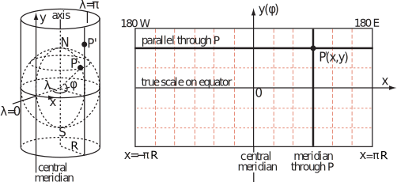

- Source:
Classes
Members
(static, constant) limit :Object.<{tet:Number, oct:Number, dod:Number}>
Maximum subdivision level without overflowing any buffer (16 bits - 65536).
Type:
- Object.<{tet:Number, oct:Number, dod:Number}>
- Source:
(static, constant) nsegments :Number
Default number of segments (points-1) for drawing a meridian or parallel.
Type:
- Number
- Source:
(inner, constant) initialOcta :Array.<vec3>
Six points of an octahedron inscribed in the unit sphere.
Type:
- Array.<vec3>
- Source:
- See:
(inner, constant) initialTet :Array.<vec3>
Four points of a tetrahedron inscribed in the unit sphere.
Type:
- Array.<vec3>
(inner) vec3 :glMatrix.vec3
gl-matrix 3 Dimensional Vector.
Type:
- glMatrix.vec3
- Source:
Methods
(static) cartesian2Spherical(p) → {Object.<s:Number, t:Number>}
Return a pair of spherical coordinates, in the range [0,1], corresponding to a point p onto the unit sphere.
The forward projection transforms spherical coordinates into planar coordinates:- if point p is plotted on a plane, we have the plate carrée projection, a special case of the equirectangular projection.
- this projection maps x to be the value of the longitude and y to be the value of the latitude.
The singularity of the mapping (parametrization) is at φ = 0 (y = -r) and φ = π (y = r):
- In this case, an entire line at the top (or bottom) boundary of the texture is mapped onto a single point.
- In geographic coordinate system, φ is measured from the positive y axis (North), not the z axis, as it is usual in math books.
- Therefore, we will use North-Counterclockwise Convention.
- The 'clockwise from north' convention is used in navigation and mapping.
- ________________________________________________
- atan2(y, x) (East-Counterclockwise Convention)
- atan2(x, y) (North-Clockwise Convention)
- atan2(-x,-y) (South-Clockwise Convention)
- ________________________________________________
- cos(φ-90) = sin(φ)
- sin(φ-90) = -cos(φ)
- x = r cos(θ) sin(φ)
- y = −r cos (φ)
- z = -r sin(θ) sin(φ)
- z/x = −(r sin(θ) sin(φ)) / (r cos(θ) sin(φ)) = -sin(θ) / cos(θ) = −tanθ
- θ = atan(−z/x)
- φ = acos(−y/r)
with θ remaining the angle in the zx-plane and φ becoming the angle out of that plane.
Parameters:
| Name | Type | Description |
|---|---|---|
p |
vec3 | a point on the sphere. |
- Source:
- See:

Returns:
point p in spherical coordinates:
- const [x, y, z] = p
- r = 1 = √(x² + y² + z²)
- s = θ = atan2(-z, x) / 2π + 0.5
- t = φ = acos(-y/r) / π
- tg(-θ) = -tg(θ) = tan (z/x)
- arctan(-θ) = -arctan(θ) = atan2(z, x)
- border ≡ antimeridian
- atan2(-z, x) (border at -x axis of the image - wrap left to right) (correct form) or
- atan2(z, -x) (border at x axis of the image - wrap right to left).
- atan2(z, x) (border at x axis of the image - mirrored).
- Type
- Object.<s:Number, t:Number>
(static) clamp(x, min, max) → {Number}
Constrain a value to lie between two further values.
Parameters:
| Name | Type | Description |
|---|---|---|
x |
Number | value. |
min |
Number | minimum value. |
max |
Number | maximum value. |
- Source:
Returns:
min ≤ x ≤ max.
- Type
- Number
(static) mercator2Spherical(x, y) → {Object.<x:Number, y:Number>}
Convert a 2D point in mercator coordinates to a 2D point in spherical coordinates.
Parameters:
| Name | Type | Description |
|---|---|---|
x |
Number | longitude in [0,1]. |
y |
Number | latitude in [0,1]. |
- Source:
- See:
-
- 
Returns:
spherical coordinates in [0,1].
- Type
- Object.<x:Number, y:Number>
(static) pointsOnAntiMeridian(nopt) → {Float32Array}
Return an array with n points on the anti meridian.
Parameters:
| Name | Type | Attributes | Default | Description |
|---|---|---|---|---|
n |
Number |
<optional> |
nsegments | number of points. |
- Source:
Returns:
points on the anti meridian.
- Type
- Float32Array
(static) pointsOnEquator(nopt) → {Float32Array}
Return an array with n points on the equator.
Parameters:
| Name | Type | Attributes | Default | Description |
|---|---|---|---|---|
n |
Number |
<optional> |
nsegments | number of points. |
- Source:
Returns:
points on the equator.
- Type
- Float32Array
(static) pointsOnMeridian(longitude, nopt, anti) → {Float32Array}
Return an array with n points on a meridian given its
longitude.
Parameters:
| Name | Type | Attributes | Default | Description |
|---|---|---|---|---|
longitude |
Number | distance east or west of the prime meridian: [-180°,180°] | ||
n |
Number |
<optional> |
nsegments | number of points. |
anti |
Boolean | whether to draw the antimeridian also. |
- Source:
Returns:
points on the meridian.
- Type
- Float32Array
(static) pointsOnParallel(latitude, nopt) → {Float32Array}
Return an array with n points on a parallel given its
latitude.
Parameters:
| Name | Type | Attributes | Default | Description |
|---|---|---|---|---|
latitude |
Number | distance north or south of the Equator: [-90°,90°]. | ||
n |
Number |
<optional> |
nsegments | number of points. |
- Source:
Returns:
points on the parallel.
- Type
- Float32Array
(static) pointsOnPrimeMeridian(nopt) → {Float32Array}
Return an array with n points on the prime meridian.
Parameters:
| Name | Type | Attributes | Default | Description |
|---|---|---|---|---|
n |
Number |
<optional> |
nsegments | number of points. |
- Source:
Returns:
points on the prime meridian.
- Type
- Float32Array
(static) radians(deg) → {Number}
Convert degrees to radians.
Parameters:
| Name | Type | Description |
|---|---|---|
deg |
Number | angle in degrees. |
- Source:
Returns:
angle in radians.
- Type
- Number
(static) setMercatorCoordinates(obj)
Set Mercator vertex coordinates.
Parameters:
| Name | Type | Description |
|---|---|---|
obj |
modelData | model data. |
- Source:
(static) spherical2Cartesian(s, t, r) → {vec3}
Return a point on the unit sphere given their spherical coordinates: (θ, φ, r=1).
It is assumed that:- the two systems have the same origin,
- the spherical reference plane is the Cartesian xz plane,
- φ is inclination from the y direction, and
- the azimuth is measured from the Cartesian x axis, so that the x axis has θ = 0° (prime meridian).
- x = p[0] = r cos(θ) * sin(φ)
- z = p[2] = -r sin(θ) * sin(φ)
- y = p[1] = -r cos(φ)
Parameters:
| Name | Type | Description |
|---|---|---|
s |
Number | azimuth angle θ, 0 ≤ θ < 2π. |
t |
Number | zenith angle φ, 0 ≤ φ ≤ π. |
r |
Number | radius. |
- Source:
- See:
Returns:
cartesian point onto the unit sphere.
- Type
- vec3
(static) spherical2Mercator(s, t) → {Object.<x:Number, y:Number>}
Convert a 2D point in spherical coordinates to a 2D point in Mercator coordinates.
The Mercator projection is a map projection that was widely used for navigation, since loxodromes are straight lines (although great circles are curved).
The following equations place the x-axis of the projection on the equator, and the y-axis at longitude θ0, where θ is the longitude and φ is the latitude:- x = θ - θ0, 0 ≤ θ - θ0 ≤ 2π
- y = ln [tan (π/4 + φ/2)], -π/2 ≤ φ ≤ π/2 → -π ≤ y ≤ π
- φmax = 2 atan (eπ) - π /2 = 85.051129°
Parameters:
| Name | Type | Description |
|---|---|---|
s |
Number | longitude (horizontal angle) θ, 0 ≤ θ < 1. |
t |
Number | latitude (vertical angle) φ, 0 ≤ φ ≤ 1. |
- Source:
- See:
Returns:
mercator coordinates in [0,1].
- Type
- Object.<x:Number, y:Number>